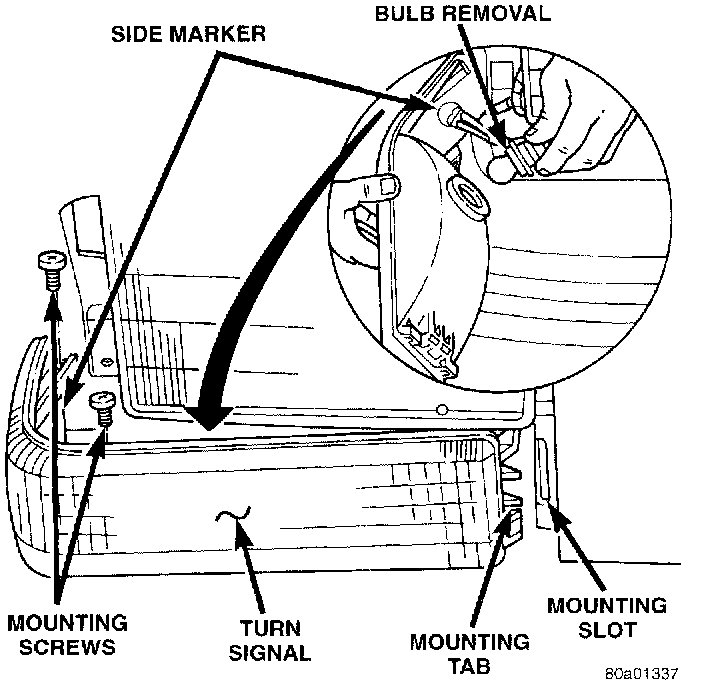

Turn Signal and Side Marker Lamp
REMOVAL1. Remove parking lamp.
Turn Signal And Side Marker Lamp:

2. Remove the screws and slide lamp outboard to expose the socket.
3. Remove turn signal socket from lamp.
4. Remove side marker socket from lamp.
5. Separate lamp from vehicle.
INSTALLATION
1. Install turn signal lamp socket.
2. Install side marker lamp socket.
3. Slide lamp into slot provided on inboard side of headlamp assembly
4. Install screws.
5. Install parking lamp.